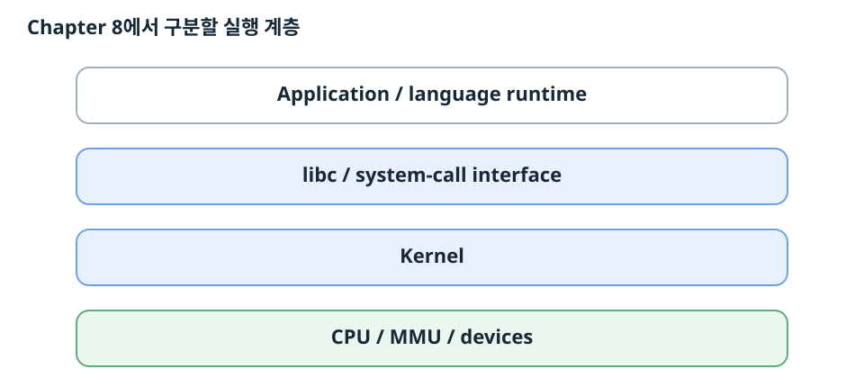
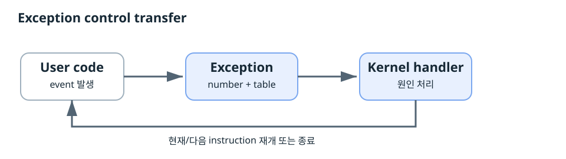
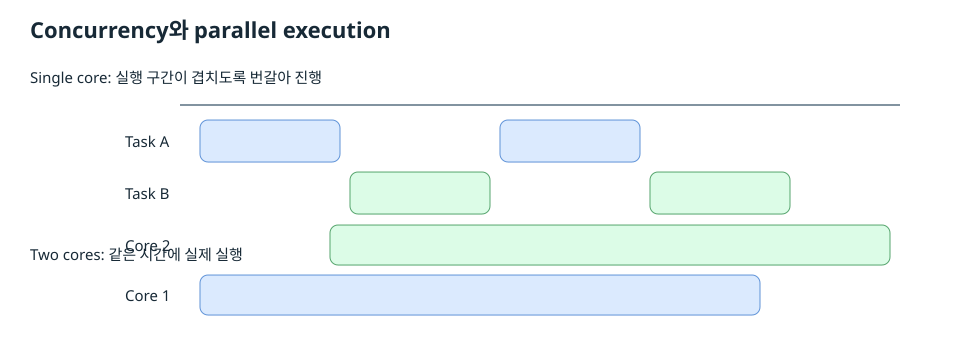
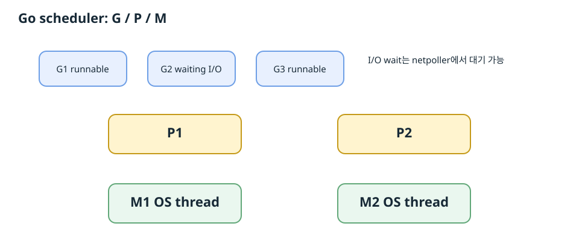
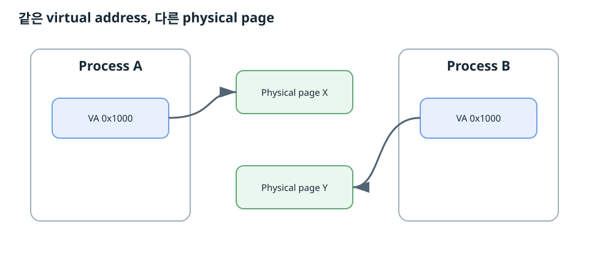
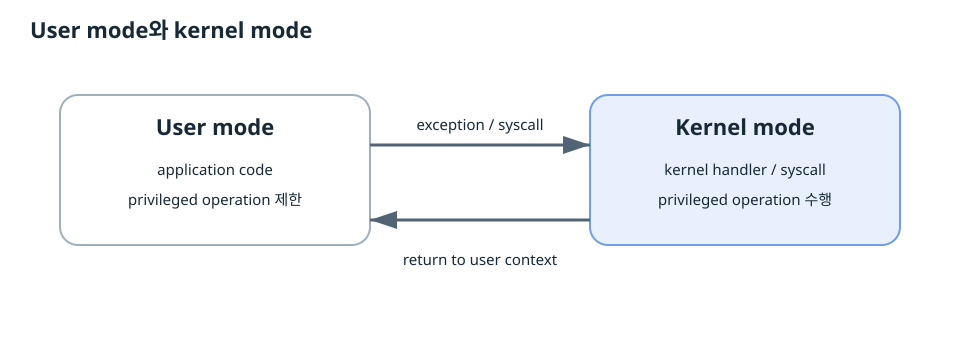

오늘 범위

프로그램은 CPU에서 실행된다. Kernel과 CPU는 program이 machine 전체를 임의로 바꾸지 못하도록 권한을 나눈다. Application은 system call을 통해 kernel 기능을 요청한다. Process는 자기만의 실행 흐름과 virtual address space를 가진 것처럼 보이며 kernel scheduler와 MMU가 이 추상화를 만든다.
| CSAPP 절 | 핵심 | 보충 |
|---|---|---|
| 8.1.1 | exception handling, exception table | strace, syscall ABI |
| 8.1.2 | interrupt / trap / fault / abort | ISA/OS 용어 차이 |
| 8.1.3 | Linux/x86 exception과 syscall | x86-64와 arm64 ABI |
| 8.2.1 | logical control flow | scheduler 관점 |
| 8.2.2 | concurrent flow | Pike 구분, C10K |
| 8.2.3 | private address space | /proc/PID/maps |
| 8.2.4 | user/kernel mode | privileged operation, reboot(2) |
1. 8.1 Exceptions

Processor가 event를 감지하면 현재 control flow를 중단하고 exception handler로 control을 넘긴다. Exception number가 exception table의 handler를 선택한다.
| 분류 | 원인 | Handler 뒤 |
|---|---|---|
| Interrupt | 외부 I/O | 다음 instruction |
| Trap | 의도된 synchronous event | 다음 instruction. System call이 대표 사례. |
| Fault | 복구 가능한 오류 가능성 | 복구 후 faulting instruction 재실행 가능 |
| Abort | 심각한 hardware/system 상태 | application flow로 정상 복귀하지 않음 |
strace로 확인한 system call
write(1, "hello, world\n", 13) = 13 exit_group(0) = ? +++ exited with 0 +++
0은 stdin, 1은 stdout, 2는 stderr다. Linux x86-64 raw syscall ABI에서 syscall number는 rax, 첫 인자는 rdi에 들어간다. rdi=1은 stdout을 선택한다. 종료 syscall은 caller로 돌아오지 않는다.
2. 8.2 Processes
Process는 실행 중인 program의 instance다. OS는 각 process에 logical control flow와 private address space를 제공한다.
8.2.1 Logical Control Flow
각 process는 자기 instruction이 연속해서 실행되는 것처럼 관찰한다. 실제 CPU에서는 여러 process의 실행 구간이 섞일 수 있다. Kernel scheduler가 CPU에서 실행할 context를 선택한다.
8.2.2 Concurrent Flows

CS:APP는 두 logical flow의 실행 interval이 시간상 겹치면 concurrent라고 정의한다. 서로 다른 processor/core에서 동시에 실행되는 concurrent flow를 parallel flow라고 설명한다.
CS:APP는 실행 interval을 기준으로 정의한다. Rob Pike 계열 설명은 concurrency를 program composition과 structure의 관점에서, parallelism을 simultaneous execution의 관점에서 설명한다. 교재 문제에서는 CS:APP 정의를 사용한다.
수업 확장: 서버 동시성
웹 서버는 여러 request가 I/O를 기다리는 동안 다른 request도 진행해야 한다. Request마다 OS thread 하나를 배정하면 connection 수 증가에 따라 stack memory와 scheduling 비용도 증가한다. C10K는 많은 connection을 효율적으로 처리하는 server architecture 문제를 대표한다.
Blocking call과 function coloring
Async runtime에서 blocking call은 worker thread를 점유한다. Non-blocking I/O는 대기 상태를 runtime에 등록하고 worker가 다른 task를 실행할 수 있게 한다. 함수의 실행 방식이 호출 체인의 작성 방식에 영향을 주는 제약을 function coloring이라고 부른다.
Go runtime

| G | Goroutine. Logical task와 stack, scheduling state. |
|---|---|
| M | Machine. OS thread. |
| P | Go code 실행에 필요한 scheduler resource. |
Network I/O는 runtime netpoller와 연동된다. Blocking syscall에 M이 대기해도 P를 다른 M에서 사용할 수 있어 runnable goroutine이 진행할 수 있다. 현대 Go scheduler는 channel, synchronization, syscall, safepoint, asynchronous preemption 등 여러 지점에서 실행을 전환한다.
3. 8.2.3 Private Address Space

Private address space와 virtual address space
CS:APP의 process 문맥에서 각 process의 private address space는 process가 보는 virtual address space다. Address space는 program이 사용할 수 있는 address의 집합이다.
Process A의 virtual address
0x1000과 Process B의 virtual address 0x1000은 서로 다른 physical memory를 가리킬 수 있다. 각 process는 자기 virtual address space를 기준으로 memory에 접근한다.왜 process마다 독립적으로 보이는가
MMU와 page table이 virtual address를 physical address로 변환한다. Process마다 address translation state가 달라질 수 있다. 같은 virtual address도 다른 physical page로 mapping될 수 있다.
Process address space 구조
| 영역 | 역할 |
|---|---|
| Read-only code | .text, .rodata 등 |
| Read/write data | .data, .bss 등 |
| Run-time heap | malloc 등의 동적 할당 |
| Memory-mapped region | Shared library, mmap mapping |
| User stack | 함수 호출 frame과 local execution state |
| Kernel virtual memory | Kernel code/data와 kernel mapping. User code의 직접 접근 제한 |
[LAB] 주소 문제를 디버깅하는 방법
/proc/PID/maps는 mapped region과 r/w/x/s/p permission을 보여준다. /proc/PID/pagemap은 virtual page의 physical frame 또는 swap mapping을 관찰하는 interface이며 접근 권한의 영향을 받는다.$ cat /proc/<pid>/maps $ pmap <pid> $ gdb ./program (gdb) info proc mappings (gdb) p &variable
1. 문제가 발생한 PID를 확인한다.
2. Virtual address 값을 확인한다.
3.
/proc/PID/maps에서 주소가 속한 mapping을 찾는다.4. Mapping의
r/w/x permission을 확인한다.5. File-backed mapping과 anonymous mapping을 구분한다.
6. Process를 비교할 때 각 process의 mapping을 따로 확인한다.
Chapter 6과 연결
Chapter 6에서는 cache와 memory hierarchy를 중심으로 locality와 physical storage 비용을 봤다. 여기서는 process가 virtual address abstraction을 통해 memory를 보는 구조를 배운다. 이후 virtual memory 장에서 page table과 translation을 더 깊게 다룬다.
4. 8.2.4 User and Kernel Modes

CPU는 현재 실행 코드의 privilege level을 구분한다. User mode에서는 privileged operation과 kernel memory 접근이 제한된다. Exception 또는 system call로 kernel code가 실행되면 kernel privilege로 전환된다. Handler가 user process로 복귀하면 user privilege로 돌아간다.
| 구분 | User mode | Kernel mode |
|---|---|---|
| 실행 코드 | Application code | Kernel code |
| Privileged operations | 실행 제한 | 실행 가능 |
| Kernel 영역 접근 | 직접 접근 제한 | Kernel 권한으로 접근 |
Privileged instruction 예
x86에는 control register 접근, interrupt 제어, descriptor-table 관리, I/O privilege와 관련된 privileged operation이 있다.
mov %rax, %cr3 ; address translation 상태 변경 cli ; maskable interrupt 비활성화 sti ; maskable interrupt 활성화 hlt ; processor를 halt 상태로 진입
CR3는 page-table translation의 핵심 상태를 가리킨다. User application이 임의로 변경할 수 있으면 process isolation과 kernel protection이 유지되지 않는다.
컴퓨터 전원 끄기
reboot(2)의 LINUX_REBOOT_CMD_POWER_OFF는 power-off 동작을 요청한다. 호출자는 필요한 privilege를 가져야 한다.Linux application은 system shutdown을 kernel에 요청한다. Kernel은 권한을 검사하고 filesystem, process, device 상태를 정리한 뒤 platform의 power-management mechanism을 사용한다. Linux의 reboot() interface에는 power-off 동작이 정의되어 있다.
Application이 shutdown을 요청한다. Kernel이 권한과 system 상태를 확인한다. Kernel과 platform firmware/device layer가 실제 power-off 절차를 수행한다.
5. 오늘 개념을 디버깅 관점으로 연결
| 증상 | 먼저 확인할 것 | 도구 |
|---|---|---|
| 프로그램이 갑자기 kernel로 들어간 것 같다 | 어떤 syscall/signal/exception이 발생했는가 | strace, gdb |
| 같은 주소인데 process마다 값이 다르다 | 각 PID의 virtual mapping | /proc/PID/maps, pmap |
| Segmentation fault | faulting virtual address와 mapping permission | gdb, core dump, maps |
| 서버가 많은 connection에서 멈춘다 | blocking I/O, thread 수, runnable/waiting 상태 | strace, perf, /proc, runtime profiler |
| 권한 관련 instruction 실패 | 현재 privilege level과 kernel interface 필요 여부 | disassembly, kernel docs |
문제 해결 사고 순서
관찰: 실제 증상과 주소, PID, syscall, signal을 기록한다.
실행 계층: application, runtime, libc, kernel, hardware 중 어느 계층의 현상인지 구분한다.
상태 확인: register, virtual mapping, thread state, permission을 확인한다.
OS 경계: system call 또는 exception을 통해 kernel로 들어간 지점을 찾는다.
가설: blocking, invalid mapping, permission, scheduling 중 현재 증상을 설명하는 원인을 세운다.
검증: strace, gdb, /proc, profiler 출력으로 가설을 확인한다.
6. 역사와 레거시를 같이 기억하기
Process isolation과 privilege separation은 여러 program이 한 machine을 공유하면서도 서로의 실행과 memory를 보호하기 위해 발전했다. User-level execution abstraction, kernel thread, event-driven I/O, async runtime과 lightweight thread는 많은 실행 흐름을 효율적으로 다루기 위한 서로 다른 시대의 설계다.
오늘 범위의 핵심 연결은 다음과 같다.
7. 오늘의 체크 질문
Q. Process A와 B에서 같은 virtual address가 같은 데이터를 뜻하는가?
A. 각 process의 mapping에 따라 달라진다.
Q. User code가 CR3를 직접 바꿀 수 있는가?
A. x86 privilege rule이 해당 operation을 제한한다.
Q. Application은 kernel 기능을 어떻게 요청하는가?
A. System-call interface를 사용한다.
Q. Private address space에서 private의 핵심은 무엇인가?
A. Process별 virtual memory mapping과 protection이다.
8. 참고 자료
자료 표기: 교재 설명과 수업 확장, 공식 구현 문서를 구분해 읽는다.
- CSAPP 3e Chapter 8 §8.1-§8.2.4
- Linux man-pages: syscall(2), exit_group(2), proc_pid_maps(5), proc_pid_pagemap(5), reboot(2)
- Go runtime HACKING, runtime/proc.go
- Rob Pike, Concurrency is not Parallelism
- Erlang/OTP ERTS NIF and dirty scheduler documentation
CS:APP 3e, Chapter 8, pp. 759-772.
Intel 64 and IA-32 Software Developer's Manual, privilege levels, control registers, privileged instructions.
Linux man-pages: syscall(2), proc_pid_maps(5), reboot(2).
Go runtime documentation and source: G/M/P scheduler, netpoll, syscall handoff.